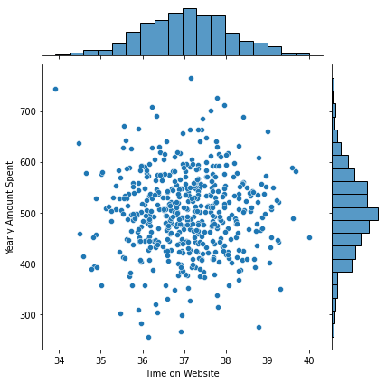
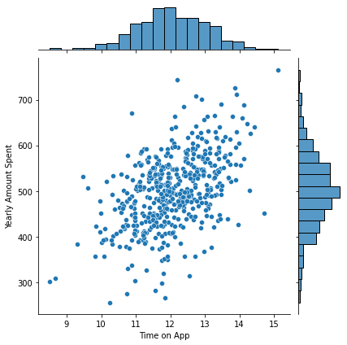
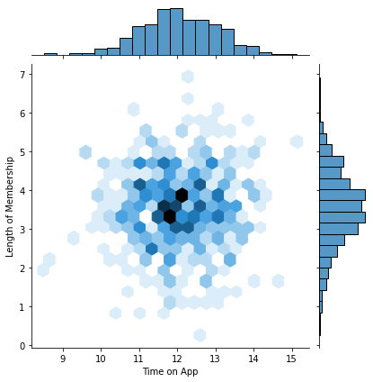
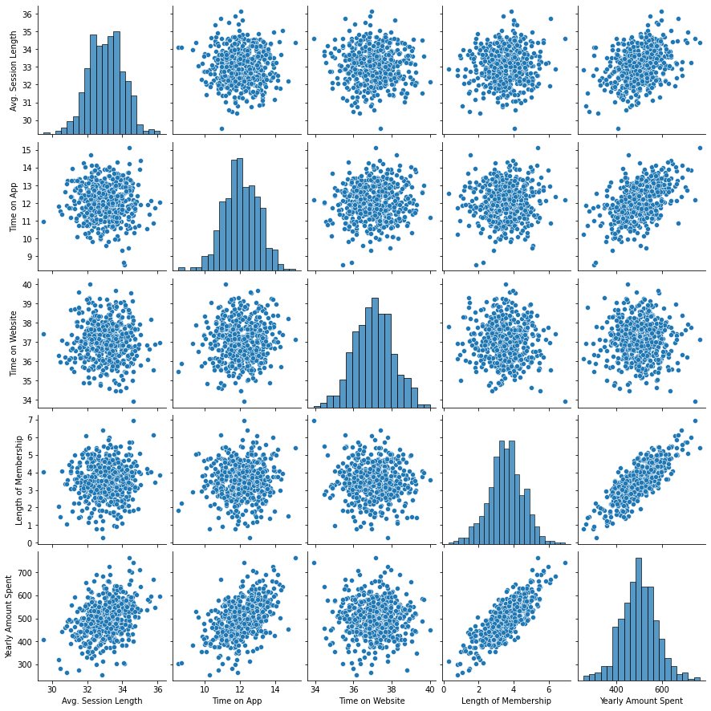
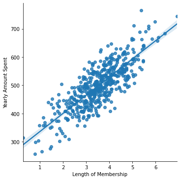
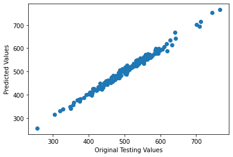
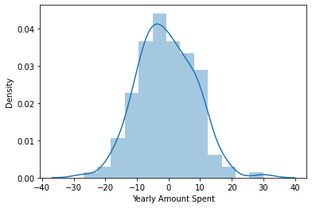

Linear Regression Project
Congratulations! You just got some contract work with an Ecommerce company based in New York City that sells clothing online but they also have in-store style and clothing advice sessions. Customers come in to the store, have sessions/meetings with a personal stylist, then they can go home and order either on a mobile app or website for the clothes they want.
The company is trying to decide whether to focus their efforts on their mobile app experience or their website. They've hired you on contract to help them figure it out! Let's get started!
Imports
** Import pandas, numpy, matplotlib,and seaborn. Then set %matplotlib inline
(You'll import sklearn as you need it.)**
import pandas as pd
import numpy as np
import matplotlib.pyplot as plt
import seaborn as sns
%matplotlib inline
Get the Data
We'll work with the Ecommerce Customers csv file from the company. It has Customer info, suchas Email, Address, and their color Avatar. Then it also has numerical value columns:
- Avg. Session Length: Average session of in-store style advice sessions.
- Time on App: Average time spent on App in minutes
- Time on Website: Average time spent on Website in minutes
- Length of Membership: How many years the customer has been a member.
** Read in the Ecommerce Customers csv file as a DataFrame called customers.**
customers = pd.read_csv("/content/Ecommerce Customers")
Check the head of customers, and check out its info() and describe() methods.
customers.head()
| Address | Avatar | Avg. Session Length | Time on App | Time on Website | Length of Membership | Yearly Amount Spent | ||
|---|---|---|---|---|---|---|---|---|
| 0 | mstephenson@fernandez.com | 835 Frank Tunnel\nWrightmouth, MI 82180-9605 | Violet | 34.497268 | 12.655651 | 39.577668 | 4.082621 | 587.951054 |
| 1 | hduke@hotmail.com | 4547 Archer Common\nDiazchester, CA 06566-8576 | DarkGreen | 31.926272 | 11.109461 | 37.268959 | 2.664034 | 392.204933 |
| 2 | pallen@yahoo.com | 24645 Valerie Unions Suite 582\nCobbborough, D... | Bisque | 33.000915 | 11.330278 | 37.110597 | 4.104543 | 487.547505 |
| 3 | riverarebecca@gmail.com | 1414 David Throughway\nPort Jason, OH 22070-1220 | SaddleBrown | 34.305557 | 13.717514 | 36.721283 | 3.120179 | 581.852344 |
| 4 | mstephens@davidson-herman.com | 14023 Rodriguez Passage\nPort Jacobville, PR 3... | MediumAquaMarine | 33.330673 | 12.795189 | 37.536653 | 4.446308 | 599.406092 |
customers.describe()
| Avg. Session Length | Time on App | Time on Website | Length of Membership | Yearly Amount Spent | |
|---|---|---|---|---|---|
| count | 500.000000 | 500.000000 | 500.000000 | 500.000000 | 500.000000 |
| mean | 33.053194 | 12.052488 | 37.060445 | 3.533462 | 499.314038 |
| std | 0.992563 | 0.994216 | 1.010489 | 0.999278 | 79.314782 |
| min | 29.532429 | 8.508152 | 33.913847 | 0.269901 | 256.670582 |
| 25% | 32.341822 | 11.388153 | 36.349257 | 2.930450 | 445.038277 |
| 50% | 33.082008 | 11.983231 | 37.069367 | 3.533975 | 498.887875 |
| 75% | 33.711985 | 12.753850 | 37.716432 | 4.126502 | 549.313828 |
| max | 36.139662 | 15.126994 | 40.005182 | 6.922689 | 765.518462 |
customers.info()
<class 'pandas.core.frame.DataFrame'>
RangeIndex: 500 entries, 0 to 499
Data columns (total 8 columns):
# Column Non-Null Count Dtype
--- ------ -------------- -----
0 Email 500 non-null object
1 Address 500 non-null object
2 Avatar 500 non-null object
3 Avg. Session Length 500 non-null float64
4 Time on App 500 non-null float64
5 Time on Website 500 non-null float64
6 Length of Membership 500 non-null float64
7 Yearly Amount Spent 500 non-null float64
dtypes: float64(5), object(3)
memory usage: 31.4+ KB
Exploratory Data Analysis
Let's explore the data!
For the rest of the exercise we'll only be using the numerical data of the csv file.
Use seaborn to create a jointplot to compare the Time on Website and Yearly Amount Spent columns. Does the correlation make sense?
sns.jointplot(x=customers['Time on Website'], y=customers['Yearly Amount Spent'])
<seaborn.axisgrid.JointGrid at 0x7fea9e12f7d0>

** Do the same but with the Time on App column instead. **
sns.jointplot(x=customers['Time on App'], y=customers['Yearly Amount Spent'])
<seaborn.axisgrid.JointGrid at 0x7fea9dfb46d0>

** Use jointplot to create a 2D hex bin plot comparing Time on App and Length of Membership.**
sns.jointplot(x=customers['Time on App'], y=customers['Length of Membership'], kind='hex')
<seaborn.axisgrid.JointGrid at 0x7fea9de26150>

Let's explore these types of relationships across the entire data set. Use pairplot to recreate the plot below.(Don't worry about the the colors)
sns.pairplot(customers)
<seaborn.axisgrid.PairGrid at 0x7feaaaceafd0>

Based off this plot what looks to be the most correlated feature with Yearly Amount Spent?
#Length of Membership
**Create a linear model plot (using seaborn's lmplot) of Yearly Amount Spent vs. Length of Membership. **
sns.lmplot(x='Length of Membership', y='Yearly Amount Spent', data=customers)
<seaborn.axisgrid.FacetGrid at 0x7feaa423c490>

Training and Testing Data
Now that we've explored the data a bit, let's go ahead and split the data into training and testing sets.
** Set a variable X equal to the numerical features of the customers and a variable y equal to the "Yearly Amount Spent" column. **
X = customers[['Avg. Session Length', 'Time on App', 'Time on Website', 'Length of Membership']]
y = customers['Yearly Amount Spent']
** Use modelselection.traintestsplit from sklearn to split the data into training and testing sets. Set testsize=0.3 and random_state=101**
from sklearn.model_selection import train_test_split
X_train, X_test, y_train, y_test = train_test_split(X, y, test_size=0.3, random_state=101)
Training the Model
Now its time to train our model on our training data!
** Import LinearRegression from sklearn.linear_model **
from sklearn.linear_model import LinearRegression
Create an instance of a LinearRegression() model named lm.
lm = LinearRegression()
** Train/fit lm on the training data.**
lm.fit(X_train, y_train)
LinearRegression(copy_X=True, fit_intercept=True, n_jobs=None, normalize=False)
Print out the coefficients of the model
print(lm.coef_)
[25.98154972 38.59015875 0.19040528 61.27909654]
Predicting Test Data
Now that we have fit our model, let's evaluate its performance by predicting off the test values!
** Use lm.predict() to predict off the X_test set of the data.**
predictions = lm.predict(X_test)
** Create a scatterplot of the real test values versus the predicted values. **
plt.scatter(y_test, predictions)
plt.xlabel('Original Testing Values')
plt.ylabel('Predicted Values')
Text(0, 0.5, 'Predicted Values')

Evaluating the Model
Let's evaluate our model performance by calculating the residual sum of squares and the explained variance score (R^2).
** Calculate the Mean Absolute Error, Mean Squared Error, and the Root Mean Squared Error. Refer to the lecture or to Wikipedia for the formulas**
from sklearn import metrics
print("Mean Absolute Error: ", metrics.mean_absolute_error(y_test, predictions))
print("Mean Squared Error: ", metrics.mean_squared_error(y_test, predictions))
print("Root Mean Squared Error: ", np.sqrt(metrics.mean_squared_error(y_test, predictions)))
Mean Absolute Error: 7.22814865343083
Mean Squared Error: 79.81305165097457
Root Mean Squared Error: 8.93381506697864
Residuals
You should have gotten a very good model with a good fit. Let's quickly explore the residuals to make sure everything was okay with our data.
Plot a histogram of the residuals and make sure it looks normally distributed. Use either seaborn distplot, or just plt.hist().
sns.distplot(y_test-predictions)
/usr/local/lib/python3.7/dist-packages/seaborn/distributions.py:2557: FutureWarning: `distplot` is a deprecated function and will be removed in a future version. Please adapt your code to use either `displot` (a figure-level function with similar flexibility) or `histplot` (an axes-level function for histograms).
warnings.warn(msg, FutureWarning)

Conclusion
We still want to figure out the answer to the original question, do we focus our efforts on mobile app or website development? Or maybe that doesn't even really matter, and Membership Time is what is really important. Let's see if we can interpret the coefficients at all to get an idea.
** Recreate the dataframe below. **
cdf = pd.DataFrame(lm.coef_, X.columns)
cdf.columns = ['Coefficient']
cdf
| Coefficient | |
|---|---|
| Avg. Session Length | 25.981550 |
| Time on App | 38.590159 |
| Time on Website | 0.190405 |
| Length of Membership | 61.279097 |
** How can you interpret these coefficients? **
Interpreting the coefficients:
- Holding all other features fixed, a 1 unit increase in Avg. Session Length is associated with an increase of 25.98 total dollars spent.
- Holding all other features fixed, a 1 unit increase in Time on App is associated with an increase of 38.59 total dollars spent.
- Holding all other features fixed, a 1 unit increase in Time on Website is associated with an increase of 0.19 total dollars spent.
- Holding all other features fixed, a 1 unit increase in Length of Membership is associated with an increase of 61.27 total dollars spent.
Do you think the company should focus more on their mobile app or on their website?
Well, the company must focus more on increasing the Length of Membership to lead to an increase in the yearly amount spent. However, talking about the efforts on Mobile app or Website, there are two possible scenarios:
- If the company should focus more on website to match it to the level of the mobile app.
- If the company should improve the mobile app even further as it is doing pretty well.
Now, the answer to our question lies in exploring the other factors involved in the company. Ex- we may explore the relationship between the Length of the Membership and the Mobile app or the Website to get to a more informative answer.
Great Job!
Congrats on your contract work! The company loved the insights! Let's move on.